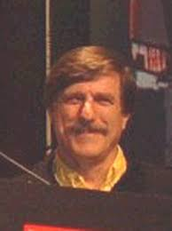
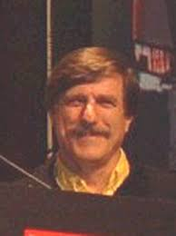

Bob Whitehead is a game designer, who used to work for Atari and made 2 of the 9 Launch Titles that came out on the Atari 2600. (Blackjack, and Star Ship). After making Atari games, he went on to Co-Found a small company you may have heard about, called "Activision".
Whitehead made many games in his time as a game developer, including 2 Launch Titles for the Atari 2600. Blackjack, and Star Ship. Whitehead converted 3 Board Games into Video Games on the 2600:
Blackjack was a launch title for the Atari 2600, allowing you to bet however much you may, and to essentially just play blackjack. The player count was up to three players, and you had the options to pick the Casino Rules, or Private Rules.
Casino was released later on into the 2600's lifespan. This game featured Blackjack, Poker, and Poker Solitaire. There was 2 different game modes. Game 1 allowed for card splitting, but only up to 2 players. And Game 2 didn't allow card splitting, but allowed up to 4 players. There is also different Difficulties for the players to choose from for preference
Video Chess was the last Board Game Whitehead converted into a Video Game. the game features 8 different difficulty levels, allowing the computer to take a certain amount of time between each move, to make a better move. If you made a wrong move, the game would beep to inform you that you can't do that, and then doesn't make the move. (i.e. Opening up Check)